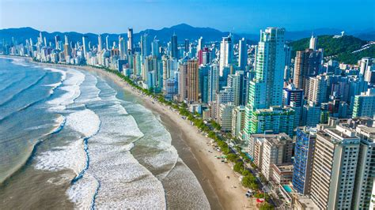
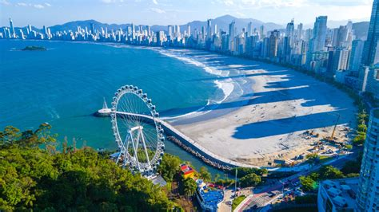

Sobre Balneário
Balneário Camboriú é uma vibrante cidade litorânea situada no estado de Santa Catarina, conhecida por suas praias deslumbrantes, infraestrutura moderna e uma variedade de atrações turísticas que encantam visitantes de todas as idades.
- Principais Atrações:
- Parque Unipraias: Este complexo turístico único no mundo conecta duas praias por meio de bondinhos aéreos. O passeio oferece vistas panorâmicas da cidade e do mar, além de atividades como trilhas ecológicas e acesso à Praia de Laranjeiras, conhecida por suas águas calmas e infraestrutura de bares e restaurantes.
- Cristo Luz: Uma estátua de 33 metros de altura que representa Jesus Cristo e é um dos principais cartões-postais da cidade. À noite, o monumento ilumina-se com diferentes cores, proporcionando um espetáculo visual.
- Rodovia Interpraias: Considerada uma das mais belas de Santa Catarina, essa estrada costeira liga diversas praias paradisíacas, como Laranjeiras, Taquaras e do Estaleiro, permitindo aos visitantes explorar a diversidade natural da região.
- Balneário Shopping: Um dos maiores centros comerciais do estado, oferecendo uma ampla variedade de lojas, restaurantes e opções de entretenimento, garantindo aos turistas uma experiência de compras completa. Gastronomia e Vida Noturna:
- A cidade conta com uma rica oferta gastronômica, desde restaurantes sofisticados até quiosques à beira-mar, servindo pratos típicos da culinária catarinense e frutos do mar frescos. À noite, Balneário Camboriú ganha vida com uma variedade de bares, pubs e casas noturnas, garantindo entretenimento para todos os gostos. Com sua combinação de belezas naturais, infraestrutura de ponta e uma variedade de atrações culturais e de lazer, Balneário Camboriú se consolida como um destino turístico imperdível no sul do Brasil.
Como chegar em BC
Balneário Camboriú está localizado no litoral norte de Santa Catarina, região sul do Brasil. Fica a cerca de:
- 85 km ao norte de Florianópolis
- 30 km ao sul de Itajaí
- 220 km ao norte de Curitiba
De avião
Aeroportos mais próximos:
- Aeroporto Internacional de Navegantes (NVT) – o mais próximo, a apenas 35 km de Balneário Camboriú.
- Opções de transporte: táxi, Uber, transfer ou aluguel de carro.
- Voo direto de cidades como São Paulo, Campinas, Rio de Janeiro, entre outras.
- Aeroporto de Florianópolis (FLN) – fica a cerca de 87 km.
- Ideal para quem quer combinar a viagem com a capital de Santa Catarina.
- Aeroporto de Florianópolis (FLN) – fica a cerca de 87 km.
- Ideal para quem quer combinar a viagem com a capital de Santa Catarina.
De ônibus
A rodoviária de Balneário Camboriú recebe ônibus de várias cidades brasileiras.
- Empresas que operam na região:
- Catarinense
- Itapemirim
- Reunidas
- Há rotas diretas de:
- São Paulo
- Santa Catarina
- Porto Alegre
- Entre outras
- Você pode conferir horários e preços em sites como:
De carro
- Se estiver em cidades próximas ou quer fazer uma road trip:
- Pela BR-101, que é a principal rodovia do litoral sul do Brasil
- A cidade é bem sinalizada, com acesso fácil vindo do norte (Joinville, Curitiba) ou do sul (Florianópolis, Porto Alegre).
- Distâncias aproximadas:
- Curitiba → 215 km (cerca de 3 horas de carro)
- Florianópolis → 85 km (cerca de 1h15 de carro)
- São Paulo → 600 km (cerca de 8 horas de carro)
Veja rotas da sua localização clicando aqui
Algumas fotos do Destino


Para saber mais, visite nosso perfil no instagram